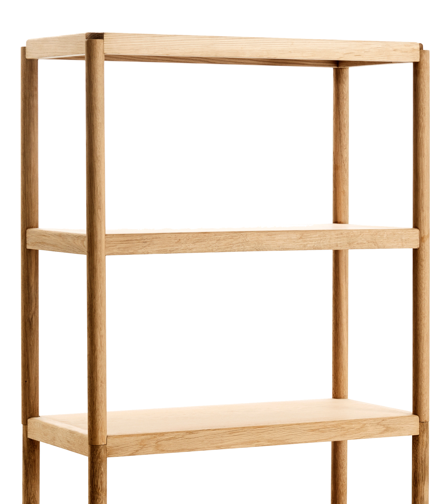

Waterlily
Both a chair and a side table, reminiscence of an tractor seat or a milking stool.

Megingjörð
Rooted in a nordic simplicity and inspired by 1950s Scandinavian design.

Lønstrup
A small work table inspired by the dune landscapes of the North Sea.

Brick
A simple shelf in modules that can be stacked for multiple purposes.